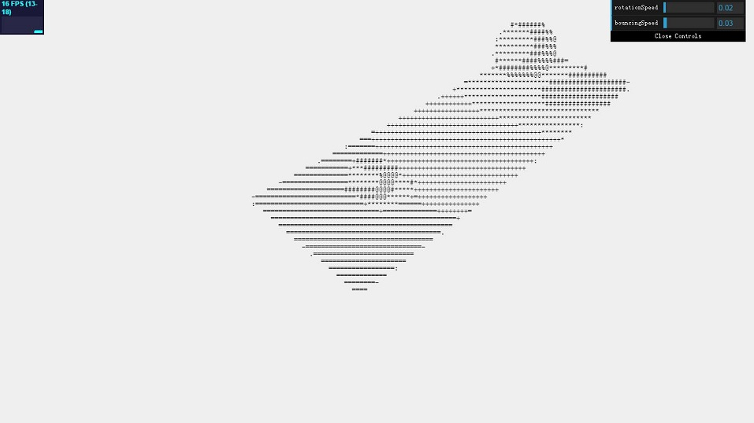
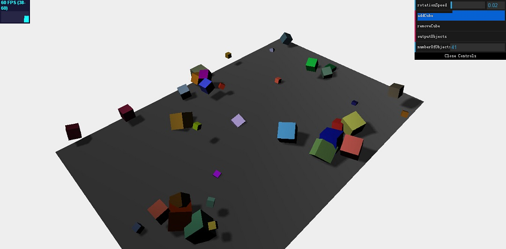
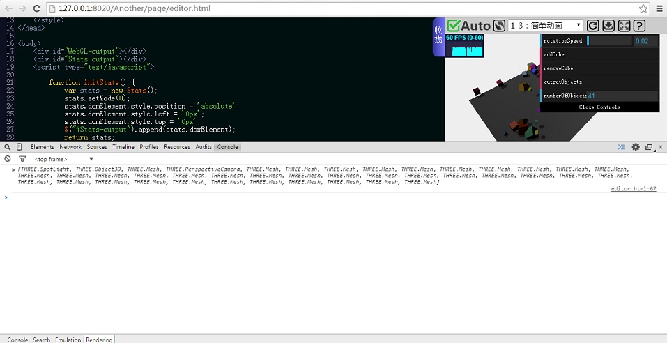
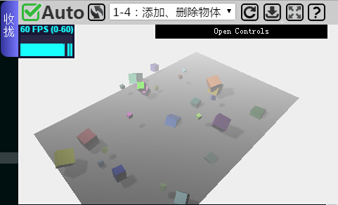
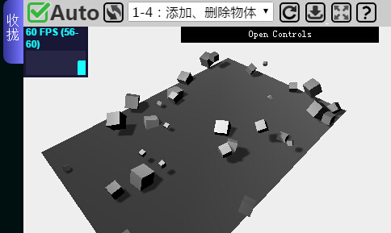

（1）是用Three.js的ASCII特效渲染场景
（2）动态添加、删除物体，统计场景内对象数量
（3）迷雾特效，以及重载材质
这是本章的最后一节教程，不会介绍太多新的东西，重点在于回顾先前的知识并进行实际运用。本节教程在编辑器中有完整的实例代码。这些代码是在先前的各类实例上进行拓展。你可以先自己手写代码，然后再参考在线IDE上的代码。
Three.js有很多你可以用它来改变输出呈现方式的有趣功能。在这一节，我想向你介绍这些特效之一：ASCII特效。有了ASCII效果，你只需要几行代码就可以在我们的动画场景改变为复古的ASCII字符为基础的动画。对于这一点，你必须修改我们以前实例的一些主要代码。
首先你要引入AsciiEffect.js文件：
<script type="text/javascript" src="js/effects/AsciiEffect.js"></script>
然后要修改如下代码：
$("#WebGL-output").append(renderer.domElement);
修改为：
var effect = new THREE.AsciiEffect( renderer );
effect.setSize( window.innerWidth, window.innerHeight );
$("#WebGL-output").append(effect.domElement);
你还要在渲染循环内做一个小改动。与调用renderer.render(scene,camera)方法不同，你必须调用effect.render(scene,camera)方法。此效果的结果示于下面的截图：
对于一个3D场景，能够动态的往里面添加、删除物体是非常常见的功能，要实现这个功能，我们可以先前使用过的dat.GUI库，给它增加两个按钮，一个来添加物体，一个来删除物体。
如果你已经能够熟练的使用dat.GUI库，你应该很容易自己手写一个出来。
this.addCube = function() {
var cubeSize = Math.ceil((Math.random() * 3));
var cubeGeometry = new
THREE.CubeGeometry(cubeSize, cubeSize, cubeSize);
var cubeMaterial = new THREE.MeshLambertMaterial({
color: Math.random() * 0xffffff
});
var cube = new THREE.Mesh(cubeGeometry, cubeMaterial);
cube.castShadow = true;
cube.name = "cube-" + scene.children.length;
cube.position.x = -30 + Math.round((Math.random() * planeWidth));
cube.position.y = Math.round((Math.random() * 5));
cube.position.z = -20 + Math.round((Math.random() * planeHeight));
scene.add(cube);
this.numberOfObjects = scene.children.length;
};
这段代码目前非常容易理解。这里没有太多新的概念。当你点击addCube按钮，一个新的大小在0到3之间随机大小的THREE.CubeGeometry实例被创建出来。除了随机大小，立方体也是随机颜色和在场景内随机位置。
在这段代码中一个新的东西是我们也通过name属性给立方体一个名字。它的名字设置为cube-，附加了当前场景内物体的数量（通过scene.children.length属性来显示）。所以你会得到像cube-1，cube-2等等那样的名字。有了name就对调试很有用，并且也可以在场景里直接找到物体。如果你用Scene.getChildByName(name)函数，你能直接取回特定的物体，比如改变它的位置。你可能想知道前面最后一行代码做了什么。numberOfObjects变量由GUI控件来使用，列举出在场景内物体的数量。所以无论是我们添加还是删除一个物体，我们设置了这个变量来更新数量。
接下来添加removeCube()函数来删除物体：
this.removeCube = function() {
var allChildren = scene.children;
var lastObject = allChildren[allChildren.length - 1];
if (lastObject instanceof THREE.Mesh) {
scene.remove(lastObject);
this.numberOfObjects = scene.children.length;
}
}
我们从THREE.Scene()对象中使用了子属性来获取到最后一个被添加的物体。我们还要检查这个物体是否为一个Mesh对象，从而防止把镜头和光给删除了。在我们移除物体后，我们将再一次更新GUI的值来显示场景内对象的数量。
另外我们需要一个outputObjects()方法来输出当前场景内所有物体的信息。
this.outputObjects = function() {
console.log(scene.children);
}
该方法将从浏览器控制台输出所有场景内对象的信息和属性。
正如你在前面章几节教程所看到，我们已经使用了一个渲染循环来渲染场景。让我们看一下这个函数的渲染函数代码：
function render() {
stats.update();
scene.traverse(function(e) {
if (e instanceof THREE.Mesh && e != plane ) {
e.rotation.x+=controls.rotationSpeed;
e.rotation.y+=controls.rotationSpeed;
e.rotation.z+=controls.rotationSpeed;
}
});
requestAnimationFrame(render);
renderer.render(scene, camera);
}
我们看到用到了THREE.Scene.traverse()函数。我们可以把一个函数作为参数传到traverse()函数内。这个传入的函数会被每一个在场景内的子元素调用。在render()函数里，我们使用traverse()函数来更新每一个cube实例的角度（我们明确的忽略那个平面对象）。我们也可以通过使用循环来迭代子元素属性数组。该实例效果如下图：
如果你点击了outputObject按钮，打开浏览器的开发者模式，你会看到控制台输出信息，如下图：
在这个例子的教学中，已经不再给出完整的代码，你需要自己动手修改以前的代码，把应有的部分补充完整。当你修改完代码后，你可以在在线IDE中打开这次的例子进行对比。
fog属性让你在完整的场景中添加雾的效果。越远的物体，它看起来越模糊不清。下面的截图给你显示了雾的效果是怎么样的：
在Three.js库中，使用fog属性相当简单。只需要将下面一行代码加到你定义的scene后面：
scene.fog=new THREE.Fog( 0xffffff, 0.015, 100 );
这边我们定义了一个白色的雾（0xffffff）。后面两个属性可以用来调整迷雾呈现。0.015是near属性，100设置的是far属性。用这两个属性你能决定迷雾从哪里开始以及雾变浓的速度。还有一种不同的方法来设置场景的迷雾。你必须使用以下定义：
scene.fog=new THREE.Fog( 0xffffff, 0.015);
此时我们没有指定near和far属性，只是雾的颜色和浓度。为了得到你想要的效果，你要多次试验这些属性值。
我们讨论scene的最后一个属性是overrideMaterial属性，它用来给所以对象固定材质。当你想如下代码来使用这个属性时，所有你加到场景的物体将使用相同的材质：
scene.overrideMaterial = new THREE.MeshLambertMaterial({color: 0xffffff});
场景的渲染结果如下所示：
从上述截图，你能看见所有cube实例都被渲染为相同的材质和颜色。在这个例子中，我们用MeshLambertMaterial对象作为材质。有了这些材质类型，你能创建不发光的物体，它们会和你加入到场景内的光产生影响。第一章的所有教程结束了，在后续大章节中，将会越来越深入到各个对象的具体细节，也会给你带来更酷的WebGL体验。